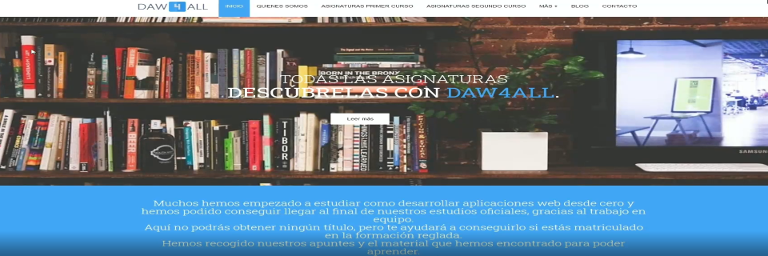
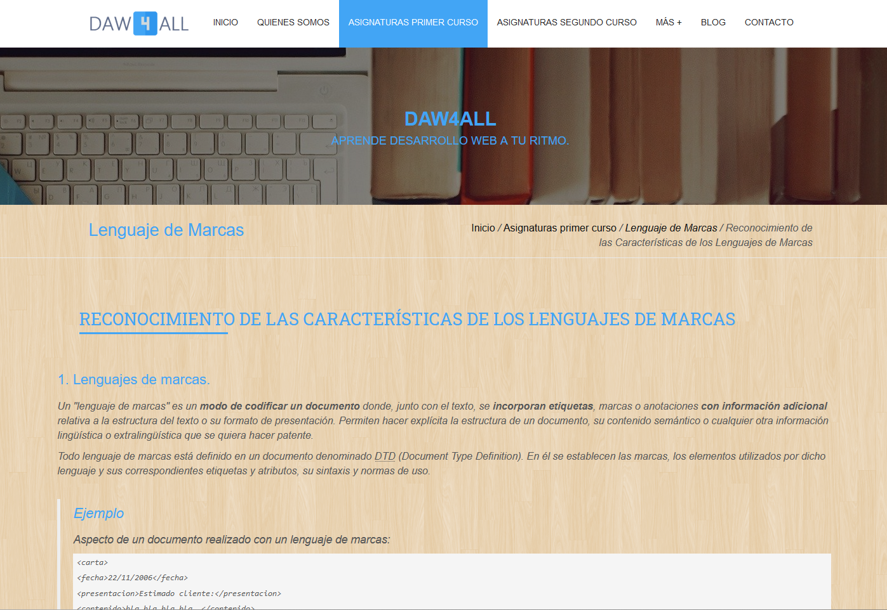

Daw4All
Daw4All.
Plataforma Educativa para estudiantes de Desarrollo Web.
Daw4All es una herramienta más para las personas que, como yo, se lanzan al mundo del desarrollo web sin nociones previas, y en especial, en la modalidad de formación a distancia.

Desde los apuntes básicos de las diversas asignaturas, a cursos extra, tareas o recursos externos, con el fin de hacer más llevadera la curva de aprendizaje.
Además, mantiene una línea de contacto directo con los usuarios, y promueve así su actualización.
Por ahora, está en una primera fase de pruebas, con una selección de alumnos pertenecientes al grupo de telegram en el que yo me formé, y con el que mantengo contacto activo.
Como se mantiene en versión de prueba y con restricciones de acceso, no tiene parte pública, pero puedes ver una pequeña demo del mismo a continuación.
Espero poder mostarte todo su potencial muy pronto!.